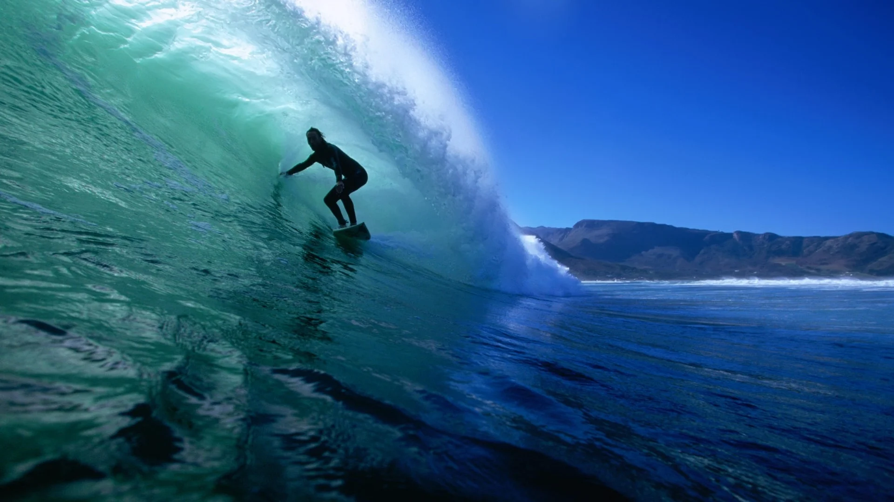
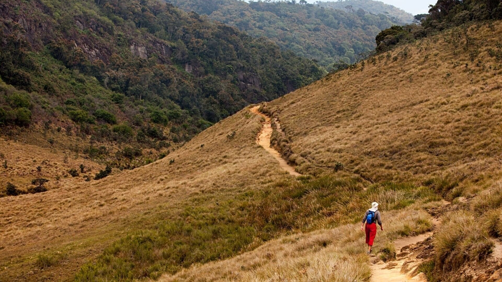
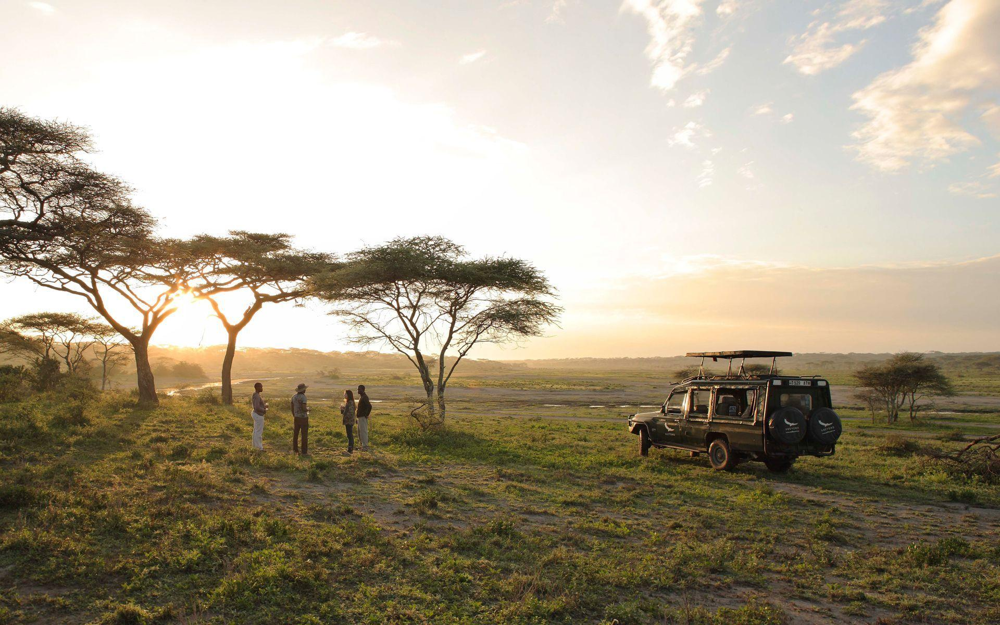

|
|
SURFING |
||
|---|---|---|
|  |
https://lushpalm.com/
https://tickettoridegroup.com https://theculturetrip.com/ |
HIKING |
||
|---|---|---|
|  |
https://muchbetteradventures.com/
https://theculturetrip.com/ https://roar.media/english/life/ |
SAFARI |
||
|---|---|---|
|  |
https://theculturetrip.com//
https://www.resplendentceylon.com// https://www.businessinsider.com/ |